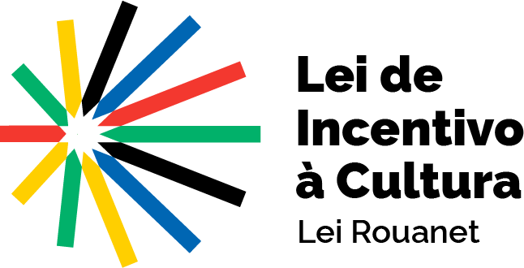

Proposta exclusiva para a Cachaça Matuta
Antes de ser marca, matuta já era poesia.
Um documentário sobre o verso que o Nordeste guarda de cor. Uma cachaça com nome de gente do interior. Esta página mostra como a Matuta entra no filme, do tamanho que ela escolher.
ma·tu·ta
adjetivo e substantivo feminino
1. Do mato, do interior. Gente do sertão e do brejo, de fala própria e memória comprida.
2. No Nordeste, nome de um jeito de fazer verso: a poesia matuta, dita com a voz e o sotaque de quem vive longe da capital.
O nome da marca já mora dentro do filme.
Repente, cordel e cantoria são a voz do interior. A Matuta carrega esse interior no nome e na figura que dança no rótulo.
- TerritórioO mesmo Nordeste, o mesmo chão, a mesma mesa onde cachaça e cantoria se encontram há gerações.
- IdentidadeUma marca que se apresenta como matuta tem orgulho de onde veio. O filme também.
- PermanênciaDocumentário fica. Daqui a vinte anos, alguém vai assistir e ler: Cachaça Matuta apresenta.
O imposto que já seria pago vira cultura com a assinatura da Matuta.
- 1CalculaA contabilidade vê quanto do IRPJ do ano pode ir para cultura: até 4% do imposto devido.
- 2DecideA Matuta escolhe o valor e o tamanho da presença. É o simulador logo abaixo.
- 3DepositaO aporte vai direto para a conta oficial do projeto no Banco do Brasil, vinculada ao PRONAC.
- 4DeduzCom o Recibo de Mecenato, o valor é abatido do IRPJ. O dinheiro vira filme e a marca vira memória.
Detalhes para o contador e o financeiro
- Quem pode
- Empresas tributadas pelo Lucro Real. Simples Nacional e Lucro Presumido não deduzem.
- Teto
- Até 4% do IRPJ devido no ano, somando todos os incentivos culturais e audiovisuais da empresa.
- Enquadramento
- Projeto aprovado no Art. 18 da Lei 8.313/1991: dedução de até 100% do valor patrocinado, dentro do teto.
- Para onde vai o dinheiro
- Conta de captação do projeto no Banco do Brasil, aberta pelo Ministério da Cultura. Só pode ser usado no que foi aprovado, com prestação de contas no SALIC.
- Comprovante
- Recibo de Mecenato emitido pelo proponente, usado na apuração do IRPJ.
- Consulta pública
- Projeto PRONAC 258413 no SALIC, sistema do Ministério da Cultura.
Percentuais, enquadramento e período de aproveitamento devem ser confirmados pela contabilidade da Matuta.
Quanto mais a Matuta entra, mais o filme fala dela.
Não é tabela de cotas. É um configurador: escolha o valor, ligue o que quiser receber e veja a marca tomando o seu lugar no documentário.
Etapa 4
A parceria da Matuta ficaria assim
Simulação de intenção. Valores, entregas e cronograma são confirmados em conversa e no termo de patrocínio.
A marca no filme, no cartaz, na sala e na conversa.
Simulações com a marca real da Matuta. As peças finais seguem o manual da Lei Rouanet e o manual da marca.
apresenta
De nada em nada, tudo.
um documentário sobre a poesia do Nordeste
De nada em nada, tudo.

apresentaCom
poetas, cantadores e cordelistas do Nordeste
Realização
Bourbon Films
Patrocínio
A Cachaça Matuta, que acreditou nesta cantoria.
Convite
Pré-estreia
De nada em nada, tudo.
sessão exclusiva para convidados da
"O que uma geração canta, a seguinte aprende."
Aprecie com moderação. Venda proibida para menores de 18 anos.
Patrocinadora do documentário
A Matuta acredita que verso bom atravessa gerações.
Noite fechada
Sarau Matuta
cantoria, repente e uma dose de conversa
Evento para maiores de 18 anos.
Certificado de patrocínio cultural
patrocinou o documentário De nada em nada, tudo., PRONAC 258413, contribuindo para a preservação da poesia nordestina.
Simulações ilustrativas. Não são arte final nem confirmam patrocínio. Toda peça com a marca segue as regras de publicidade de bebidas alcoólicas (Lei 9.294/1996 e CONAR).
Sete ganhos numa mesma dose.
- Cultural
- Ajuda a registrar poetas, cantadores e cordelistas antes que o tempo leve.
- De marca
- Aparece num filme, não num anúncio. Atenção de quem escolheu assistir.
- Reputação
- Associa a Matuta à memória do Nordeste, com origem e propósito.
- Institucional
- Certificado, relatórios e indicadores prontos para comunicação ESG.
- Conteúdo
- Imagens, bastidores e histórias para alimentar os canais da marca.
- Relacionamento
- Pré-estreia, sarau e sessões para clientes, parceiros e equipe.
- Fiscal
- Dentro do teto, o aporte sai do imposto que já seria pago. Para quem é Lucro Real, o custo líquido pode chegar a zero.
Tudo registrado, tudo à vista.
O projeto é público, aprovado e acompanhado pelo Ministério da Cultura do primeiro ao último real.
- PRONAC258413
- Valor aprovadoR$ 865.701,10
- Lei 8.313/1991Art. 18
- Deduçãoaté 100%
- Conta oficialBanco do Brasil
- ProponenteBourbon Films
Proponente e realizadora: Bourbon Films Ltda, CNPJ 65.711.903/0001-26, Campina Grande, Paraíba. Projeto consultável no SALIC pelo número do PRONAC.
Vamos escrever esse verso juntos?
A parceria montada aqui vira conversa, depois termo, depois filme.
Raul Lafayette, Bourbon Films. WhatsApp (83) 99868-3878. bourbonfilms@gmail.com